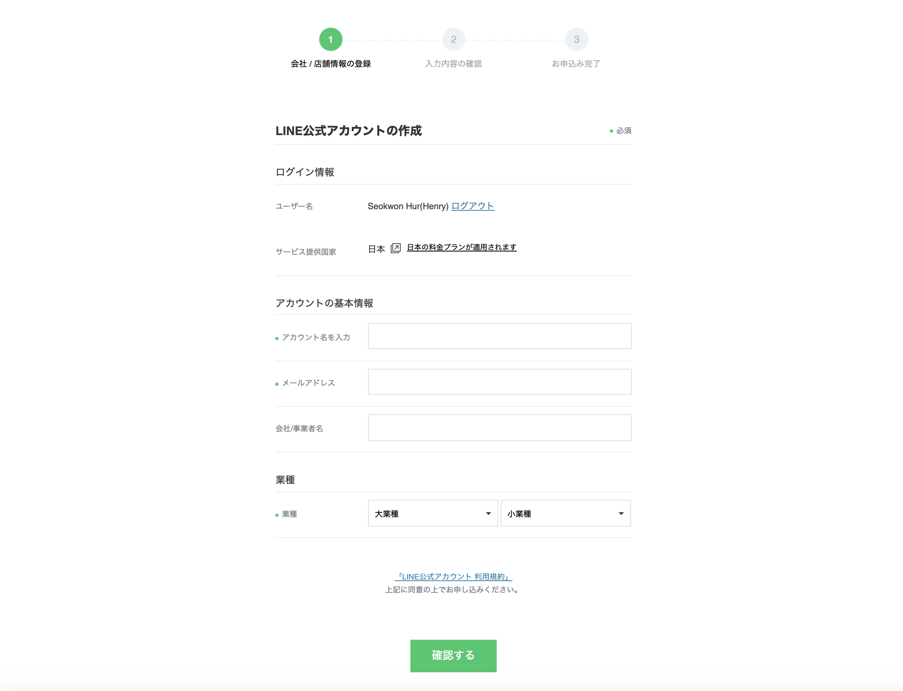
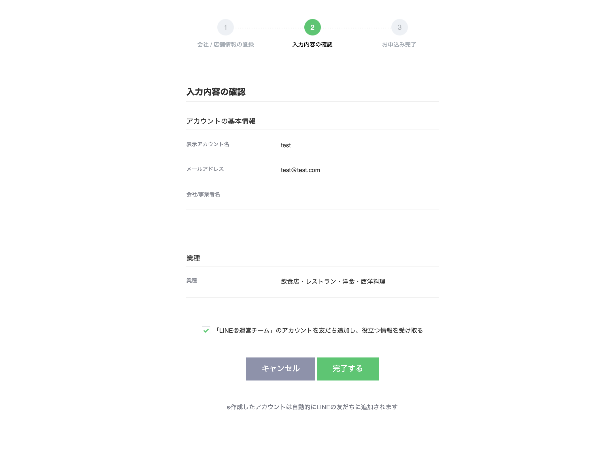
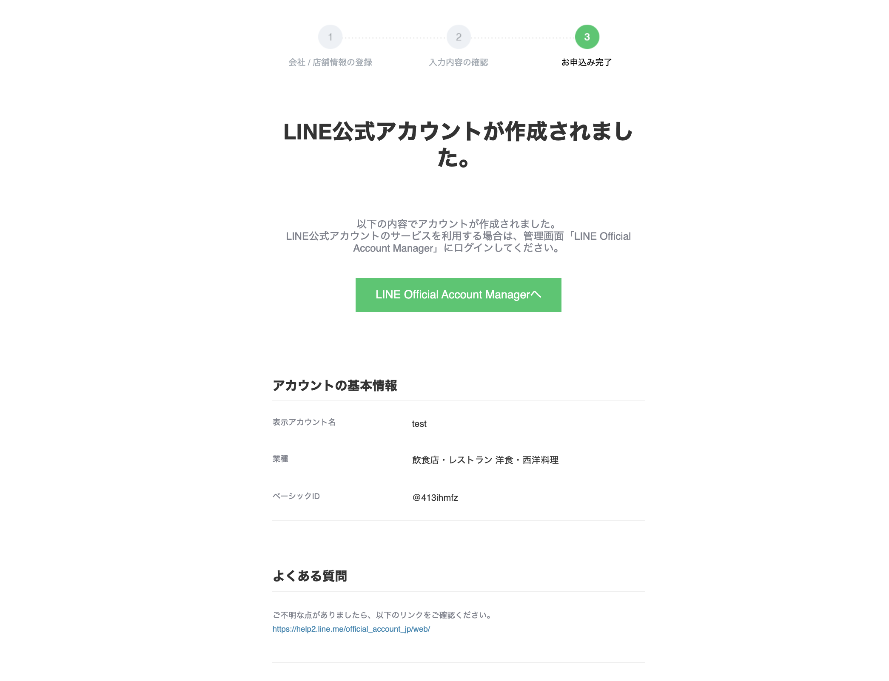
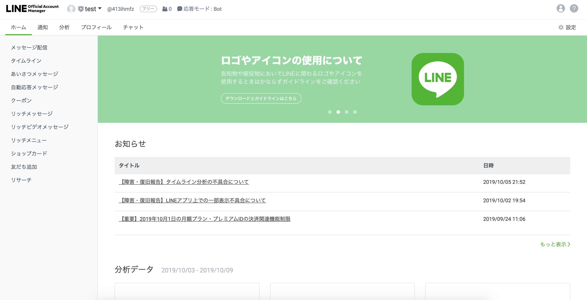
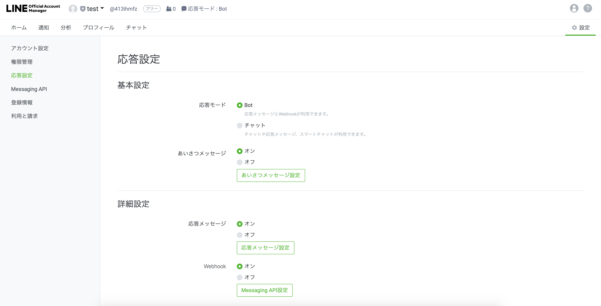
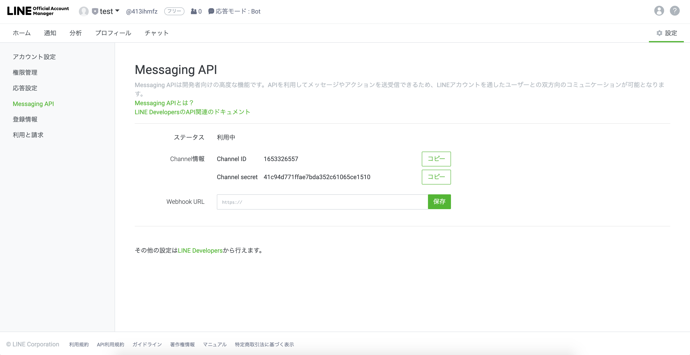
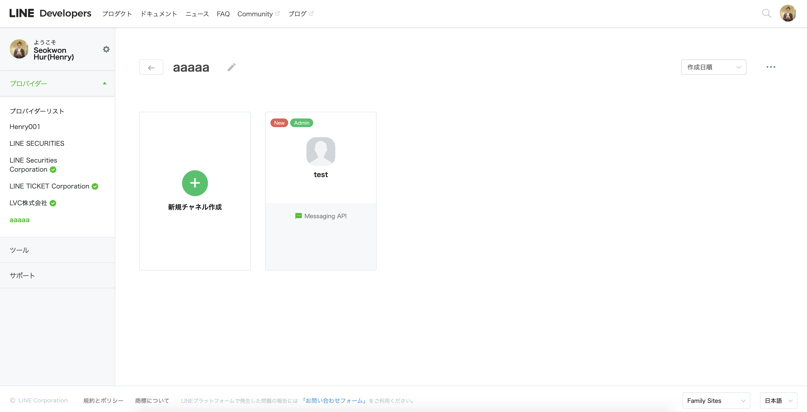
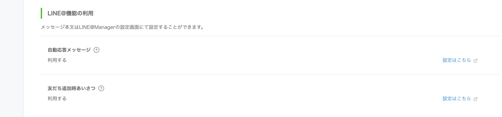

チャンネル連動ガイド - LINE
チャットボットが完成されてから、チャットボットをサービスするチャンネルとの連動を設定する必要があります。
LINE公式アカウントをはじめる
簡単な設定で、LINE BRAINのチャットボットとLINEを連動することができます。
LINEのチャンネル連動を設定するためには、LINE公式アカウントが必要です。すでにLINE公式アカウントがあれば、LINEを連動するステップに移動します。
① LINE Business Centerに接続してアカウントを作成します。

② アカウント情報を入力した後 続行をクリックします。

③ 入力したアカウント情報を確認した後 提出をクリックします。

④ アカウントの申請が完了したら LINE@ Managerにログインします。

LINEを連動する
① LINE Business Centerに接続し、 管理画面をクリックします。
② LINE@ Managerに遷移し、アカウント設定をクリックします。

③ Messaging API設定 > APIをONにするをクリックします。

④ LINE Developersをクリックします。

LINE Developersの設定
LINE DevelopersでWeb Hook URL、Channel Tokenの情報を確認および修正できます。
チャンネルの設定

① Basic information: 基本情報を確認および修正します。
② App name: アプリ名を確認および修正します。
③ App description: アプリの説明を確認および修正します。
④ Channel ID: 生成されたチャンネルの固有識別IDです。
- Channel IDはコピーして記録しておきます。
⑤ Channel Secret: Issueをクリックし、新しいChannel Secretを取得します。
- 新しいChannel Secretを取得する場合、既存のSecretを取得した後、最低1時間経過してから取得してください。
- Channel Secretはコピーして記録しておきます。
メッセージの設定

① Messaging settings: メッセージングに関する情報を確認および修正します。
② Channel access token: Issueをクリックし、新しいChannel access tokenを取得します。
- Channel access tokenは、いつでも必要なときに新しく取得できます。
- Channel access tokenはコピーして記録しておきます。
③ Use webhooks: Webhookの設定状態です。
- Enabled（有効）に設定した後、Updateをクリックします。
④ Webhook URL: Webhook URLを設定します。
- URLを入力し、Updateをクリックした後、Verifyをクリックします。
- Webhook URLは、チャットボットビルダーで取得したInvoke URLの値を入力します。
⑤ Allow bot to join group chats: グループチャットを設定します。
LINE@の設定

① Using LINE@ features: LINE@利用に関する詳細設定を変更できます。
② Auto-reply messages: 自動応答メッセージを設定します。
- ボタンをクリックし、状態を修正できます。
- Set massageをクリックし、ユーザーの会話に自動応答メッセージの内容を修正できます。
③ Greeting messages: 最初の挨拶メッセージを設定します。
- ボタンをクリックして状態を修正できます。
- Set massageをクリックして最初の挨拶メッセージの内容を修正できます。
LINE BRAINのチャットボットを設定する
LINEの設定で覚えておくべき値は以下のとおりです。
- Channel ID
- Channel Secret
- Channel access token
チャットボットサービスのチャンネルを連動からLINEを選択し、上記の3つの値を入力します。

関連情報へのリンク
ドメインの作成、Conversation Listとコンポーネントの管理および統計管理に関しては以下の利用ガイドを参照してください。
- Chatbotスタートガイド
- Chatbotご利用ガイド
- チャンネル連動ガイド
- Agent Connectionsガイド